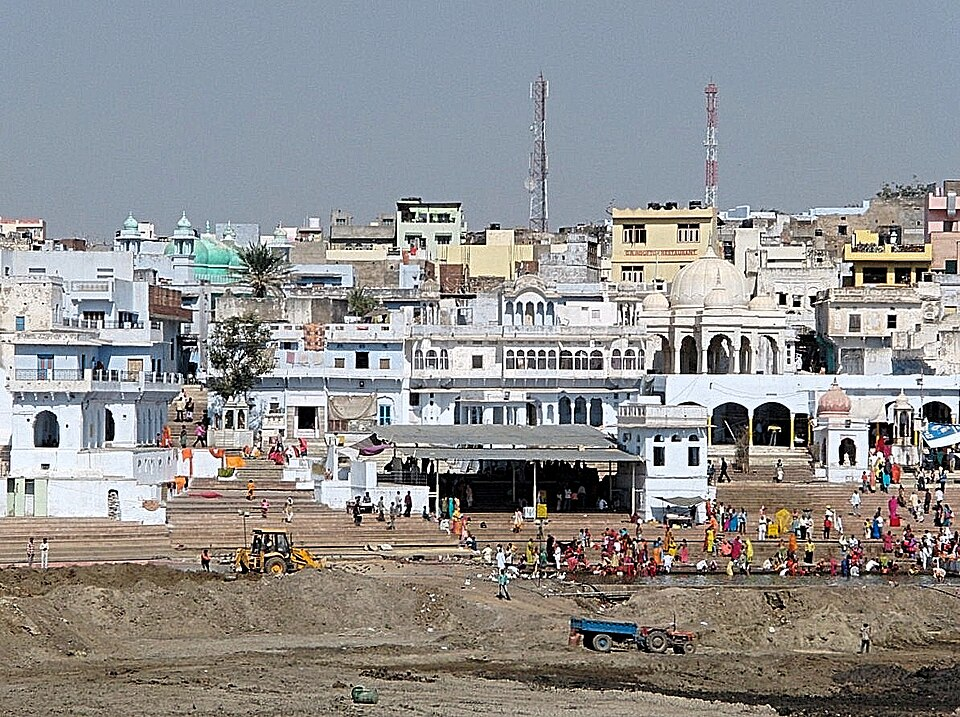
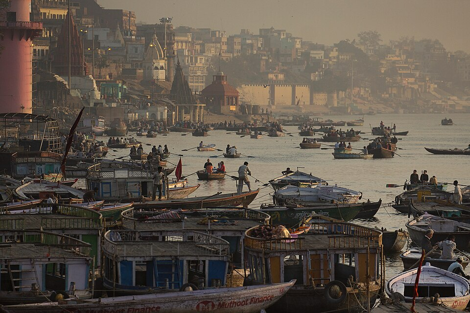

Varanasi Stop 4
Varanasi
Uttar Pradesh — Spiritual Capital of India
Varanasi is one of the oldest continuously inhabited cities on Earth — over 3,000 years old. Sitting on the banks of the sacred Ganges River, it is the holiest city in Hinduism. Every evening the famous Ganga Aarti ceremony lights up the ghats with oil lamps and chanting priests.

The Sacred Ghats
Pilgrims descend to bathe in the holy Ganges at dawn along Varanasi's ancient stone steps.

Dhamek Stupa, Sarnath
Just outside Varanasi, this stupa marks where Buddha gave his first sermon around 500 BCE.
Quick Facts
- One of the world's oldest cities (3,000+ years)
- Holiest city for Hindus worldwide
- Over 80 ghats along the Ganges
- Ganga Aarti ceremony held every evening
- Sarnath: Buddha's first sermon site
- Famous for Banarasi silk sarees